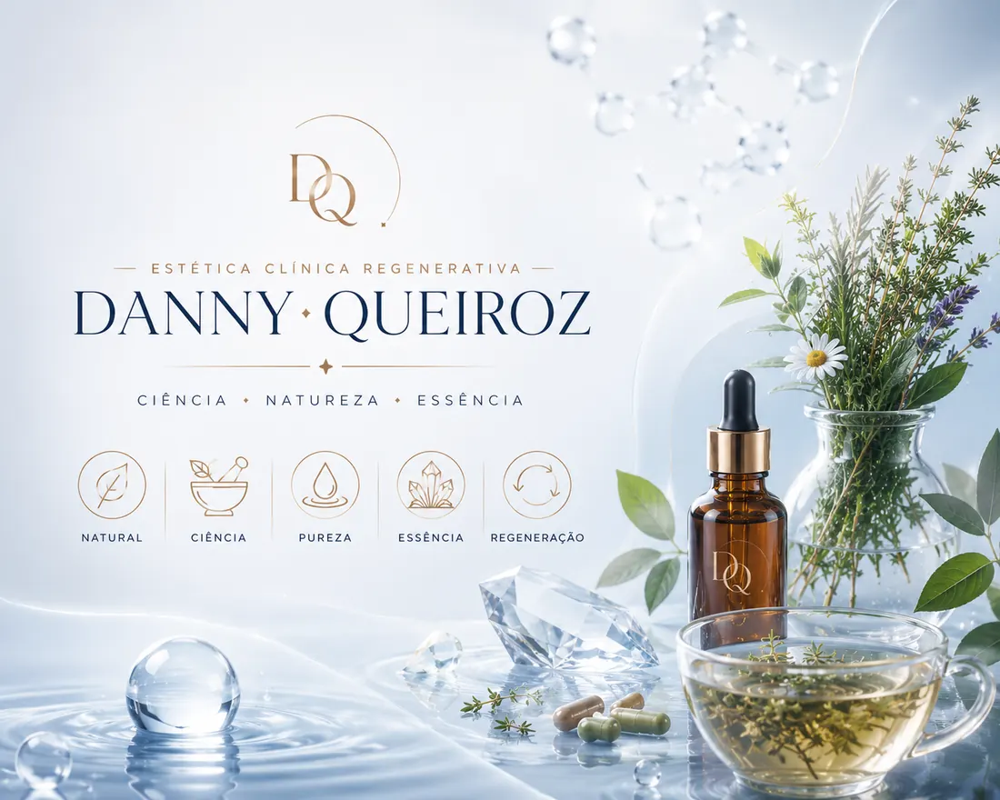
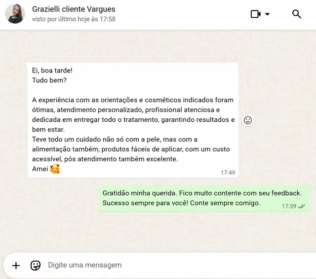
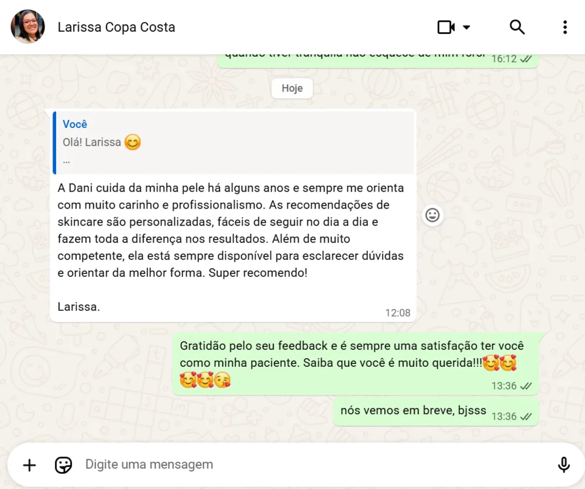
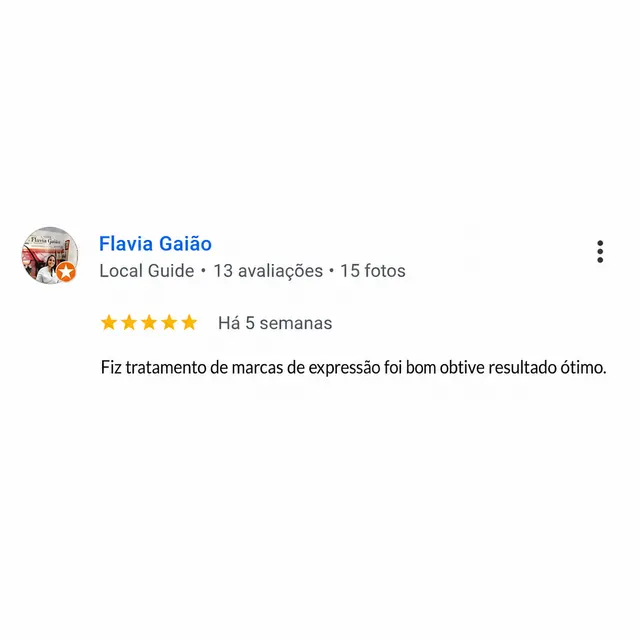
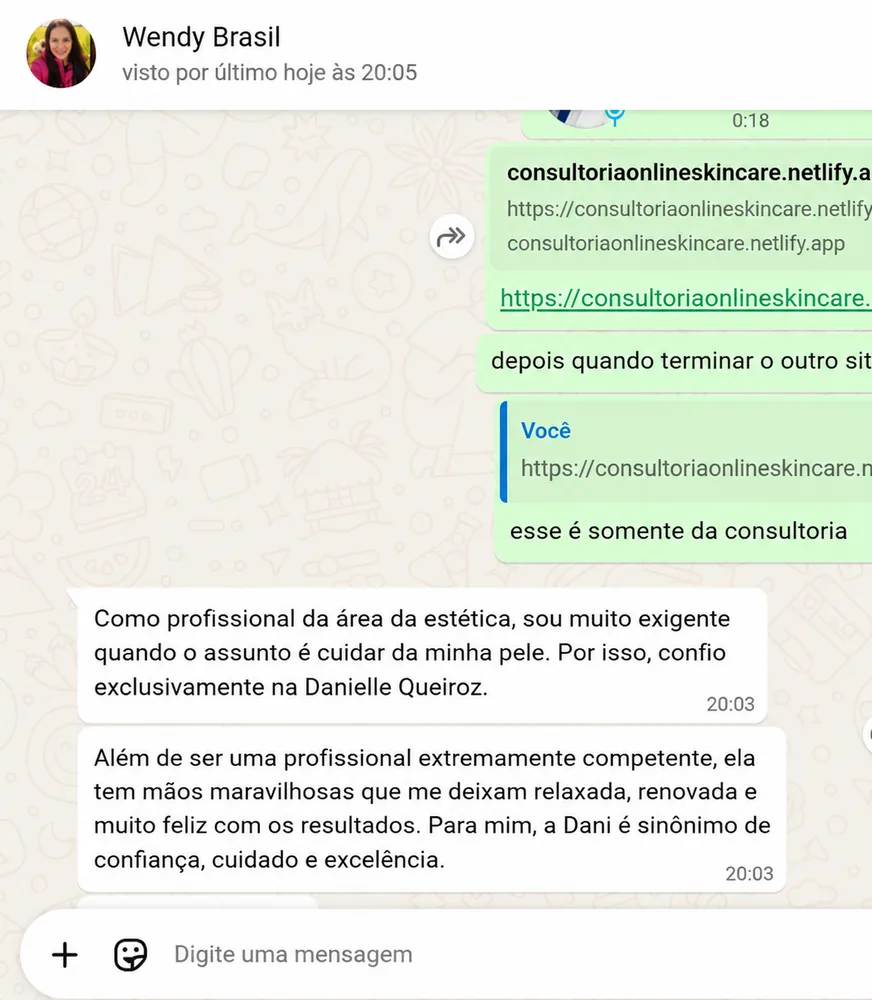
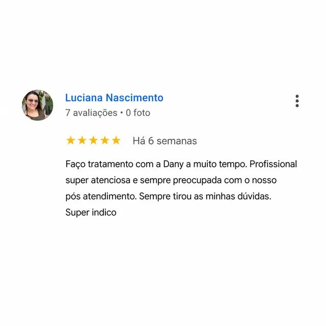
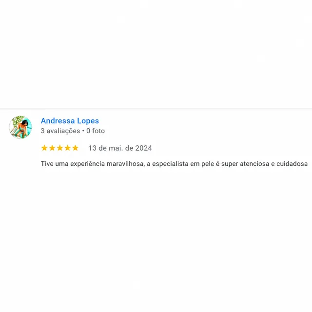
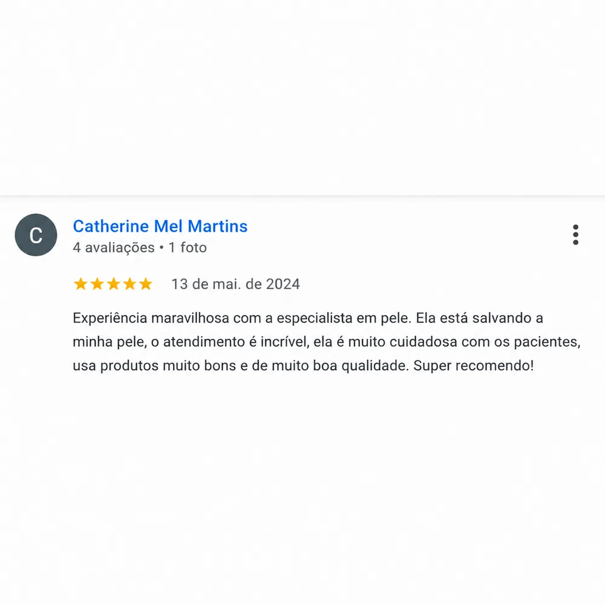
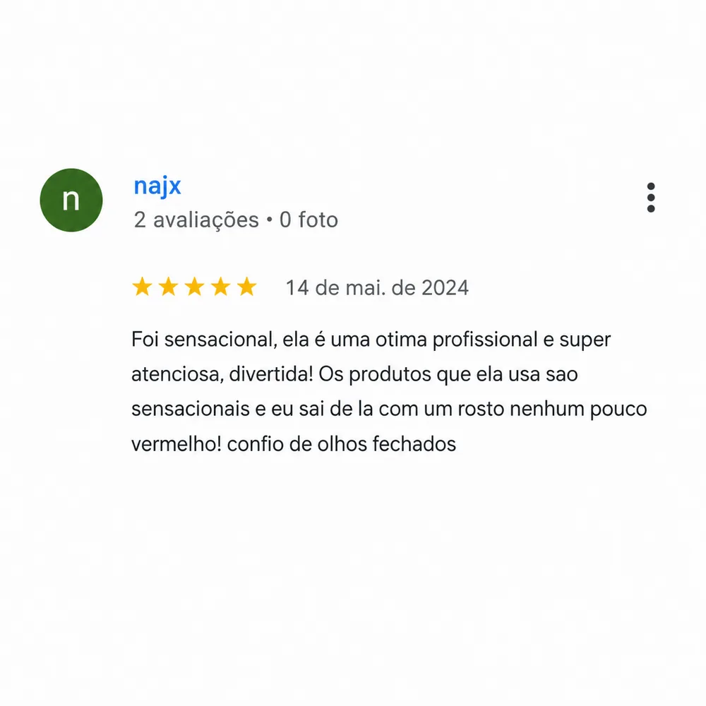

Receba um plano personalizado de skincare regenerativo com atendimento online para todo o Brasil. Especialista em acne, melasma, rosácea, rejuvenescimento facial e terapia capilar. Embora eu tenha atendido presencialmente em Araruama, Cabo Frio e Copacabana, atualmente meu principal formato de acompanhamento é a Consultoria de Skincare Regenerativa Online, disponível para pacientes de todo o Brasil.
Atendemos pacientes que buscam tratamento para manchas, acne, melasma, rosácea, rejuvenescimento facial, cicatrizes de acne, limpeza de pele profunda, alopecia feminina e masculina, queda capilar, celulite, estrias, leucodermia solar, gordura localizada, definição corporal e muito mais.
Atendimento personalizado para acne na adolescência e fase adulta, com avaliação clínica, investigação de causas associadas e protocolos regenerativos voltados para controle da inflamação, redução de cicatrizes e recuperação da saúde da pele.
Tratamentos para melasma hormonal, melasma resistente e manchas faciais com protocolos individualizados desenvolvidos conforme o histórico clínico, exposição solar e características da pele.
Protocolos voltados para estímulo de colágeno, melhora da textura, luminosidade, firmeza e qualidade da pele, respeitando as necessidades individuais de cada paciente.
Atendimento especializado em diferentes regiões para facilitar seu acesso ao tratamento.
Tratamentos de acne, melasma e rejuvenescimento facial com protocolos regenerativos.
Saiba Mais sobre AraruamaAtendimento para acne, rosácea e controle de oleosidade com abordagem clínica avançada.
Saiba Mais sobre Cabo FrioTratamentos estéticos para acne, manchas e rejuvenescimento facial com alta performance.
Saiba Mais sobre CopacabanaTambém realizamos atendimento especializado para melasma em Araruama, Cabo Frio e Copacabana, com protocolos personalizados para manchas resistentes, melasma hormonal, hiperpigmentação pós-inflamatória e cuidados contínuos para prevenção de recidivas. Cada plano de tratamento é desenvolvido de forma individualizada, considerando histórico clínico, hábitos de vida, exposição solar e características específicas da pele.
Realizamos atendimento especializado em rejuvenescimento facial em Araruama, Cabo Frio e Copacabana, com protocolos personalizados voltados para melhora da firmeza da pele, estímulo de colágeno, suavização de linhas de expressão e recuperação da luminosidade facial. Cada plano é desenvolvido de forma individualizada, considerando o histórico da pele, grau de envelhecimento cutâneo, presença de manchas, flacidez e objetivos estéticos de cada paciente.
Eu sou Danielle Brito, especialista em regeneração cutânea, com mais de uma década de experiência, pós-graduação, pesquisas em aromaterapia, nanotecnologia e uma trajetória construída entre estudos no IME, vivências na Europa e na Ásia.
Graduada em Estética e Cosmética pela UNISUAM, com Pós-graduação em Fitoterapia Aplicada e coautoria científica junto à Fiocruz e IBEx.
Mais de 250 atendimentos mensais, desenvolvimento de protocolos exclusivos e dezenas de casos complexos de melasma tratados com sucesso.

A fitoterapia é um recurso poderoso e, ao mesmo tempo, delicado. Quando utilizada de forma consciente e baseada em evidências, pode auxiliar significativamente na saúde da pele e dos cabelos.
Através da minha pós-graduação em Fitoterapia Aplicada à Estética e à Prática Esportiva, desenvolvi protocolos que unem conhecimento científico, segurança e individualização.
A fitoterapia não substitui uma avaliação clínica completa. Ela atua como complemento dentro de uma estratégia maior que envolve alimentação, sono, atividade física, controle do estresse e equilíbrio hormonal.
Meu objetivo é ajudar você a construir uma rotina regenerativa que faça sentido para sua realidade, promovendo saúde, autoestima e resultados duradouros.
Conhecer a Fitoterapia
Eu não vendo apenas skincare. Eu vendo clareza, orientação e segurança para mulheres que estão cansadas de gastar dinheiro sem resultado.
Através de uma avaliação personalizada, construímos uma rotina funcional, prática e possível para sua realidade.
Meu compromisso é ensinar você a cuidar da sua pele de forma simples, funcional e possível para sua rotina.
Quero ConhecerCada paciente possui uma história única. Para preservar a individualidade dos atendimentos, compartilho alguns relatos e convido você a conhecer mais conteúdos através do Instagram.








Tratamentos Faciais; Corporais; Capilares; Fitoterapia aplicada; Limpeza de pele nanotecnológica; Melasma; Clareamento Corporal e íntimo; ACNE; Remoção de nigras e verrugas; Rejuvenescimento Facial e Corporal; Alopecia e Consultoria online.
Sim. Todos os tratamentos são precedidos por anamnese detalhada, avaliação individualizada e protocolos de biossegurança.
As sessões possuem duração média entre 1 hora e 1 hora e meia.
Pix e cartão. Trabalhamos com taxa de agendamento.
Através do formulário do site ou diretamente pelo WhatsApp.
Não. Todas as consultas possuem valor profissional correspondente ao atendimento realizado e são realizadas com hora marcada.
WhatsApp: (21) 99219-7518
Instagram: @daniellequeirozbrito
E-mail: especialistapele@gmail.com
Em poucos minutos você recebe uma análise inicial personalizada baseada em ciência regenerativa.
Gratuito